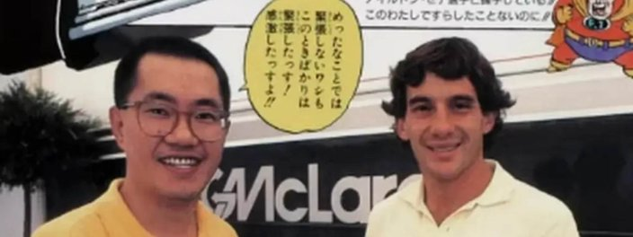

O artista e criador de mangás Akira Toriyama, que faleceu aos 68 anos, tinha uma relação próxima com o Brasil. Além da imensa popularidade da franquia Dragon Ball por aqui, o ilustrador era um grande fã de automobilismo e de Ayrton Senna. O piloto brasileiro de Fórmula 1, tricampeão da categoria e que também morreu de forma inesperada após um acidente em 1994, era adorado no Japão e teve até uma parceria bastante conhecida com a SEGA.
Além disso, ele e Toriyama se encontraram mais de uma vez. Essa admiração gerou uma colaboração em forma de desenhos, misturando duas paixões do artista e também dos brasileiros.

Em contrato com a Honda, Toriyama foi convidado a criar uma espécie de crossover entre mangás e o automobilismo. A Shueisha, editora responsável pela revista Weekly Shonen Jump, onde Dragon Ball foi publicado pela primeira vez, virou uma das patrocinadoras da própria McLaren. Um dos resultados dessa aliança foi uma série de desenhos que misturam os personagens da franquia e o McLaren MP4/5. Esse é o carro com motor da Honda que foi pilotado por Senna em 1989 e 1990, ano do seu primeiro título na categoria. Na ilustração mais famosa dessa linha de colaborações, um Gohan ainda criança (no assento do piloto), Goku e Bulma posam em um carro da McLaren usado na época. Outros desenhos também foram publicados no período — inclusive com o próprio Goku conduzindo o carro e comemorando uma vitória ao lado de outros personagens da saga.
Resumo da linha do tempo de DragonBall